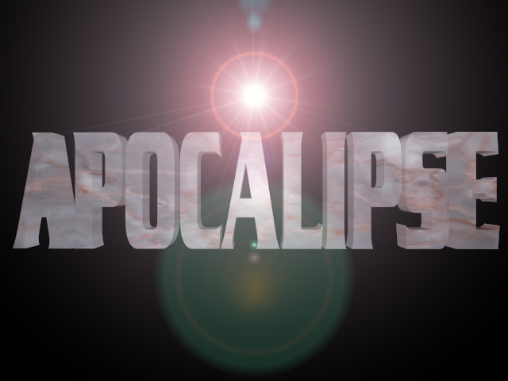
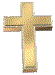

A Página do Juizo
Final
.

.
.

O que é o Apocalipse ?
O profeta Nostradamus
A Bíblia sagrada
As crenças
religiosas
Os personagens do Armagedom
Outras
profecias
Os escritores do Apocalipse
A destruição
do mundo
O criador da página
Mande suas sugestões
Você é a  ª testemunha
ª testemunha
Página ainda em construção